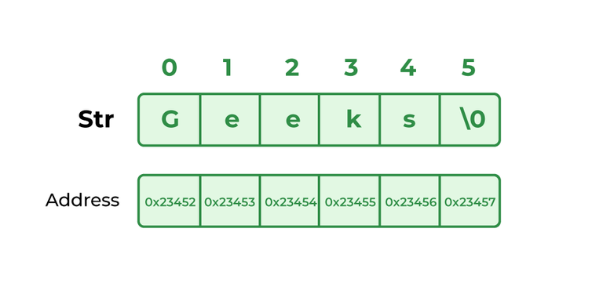

String in Data Structure
A string is a sequence of characters. The following facts make string an interesting data structure.
- Small set of elements. Unlike normal array, strings typically have smaller set of items. For example, lowercase English alphabet has only 26 characters. ASCII has only 256 characters.
- Strings are immutable in programming languages like Java, Python, JavaScript and C#.
- Many String Problems can optimized using the fact that the character set size is small. For example sorting can be done faster, counting frequencies of items is faster and many interesting interview questions are based on this.
Introduction to Strings
Strings are sequences of characters. The differences between a character array and a string are, a string is terminated with a special character ‘\0’ and strings are typically immutable in most of the programming languages like Java, Python and JavaScript. Below are some examples of strings:
"geeks" , "for", "geeks", "GeeksforGeeks", "Geeks for Geeks", "123Geeks", "@123 Geeks"

Basic Operations of String:
- Length of a String
- Check if two strings are same
- Search a Character
- Insert a Character at a Position
- Remove aa Character at a Position
- Insert a character at Multiple Positions
- Remove all occurrences of a character
- Concatenating Two Strings
- Reverse a string
- Generate all Substrings